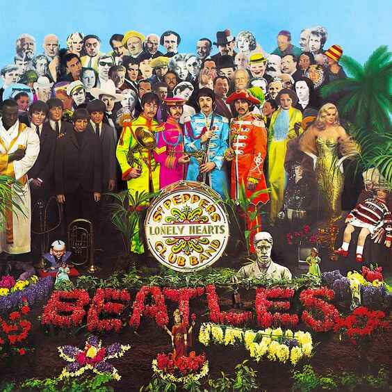
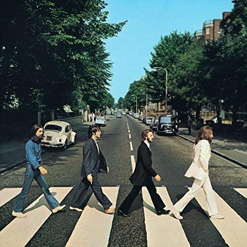
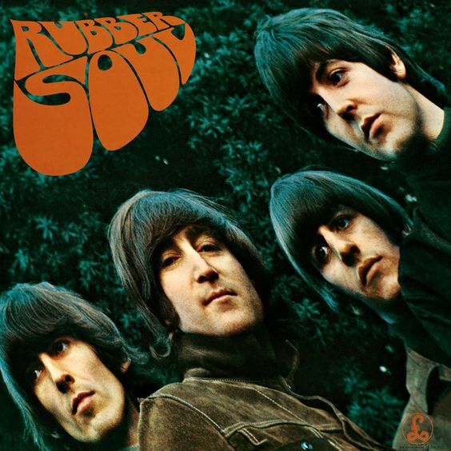

Es considerado uno de los mejores álbumes de la historia de la música.
Marca un cambio hacia la experimentación sonora, incorporando elementos
de música clásica india, música psicodélica y técnicas de grabación
innovadoras.
Temas destacados
"Eleanor Rigby": Una triste balada con un arreglo de cuerdas
que cuenta la historia de soledad.
"Yellow Submarine": Un tema alegre y surrealista cantado por Ringo Starr.
"Here, There and Everywhere": Una de las composiciones más bellas de Paul McCartney.
Presiona para ver los temas del álbum
Temas Cara A
"Taxman"
"Eleanor Rigby"
"I'm Only Sleeping"
"Love You To"
"Here, There and Everywhere"
"Yellow Submarine"
"She Said She Said"
Temas Cara B
"Good Day Sunshine"
"And Your Bird Can Sing"
"For No One"
"Doctor Robert"
"I Want to Tell You"
"Got to Get You into My Life"
"Tomorrow Never Knows"
"Sgt. Pepper's Lonely Hearts Club Band" (1967)

Inspirado por el ambiente cultural de la contracultura de los años 60,
el álbum es conceptual, pretendiendo ser un espectáculo en vivo de la banda
ficticia del mismo nombre.
Ganó cuatro premios Grammy, incluyendo Álbum del Año.
Temas destacados
"Lucy in the Sky with Diamonds": Famosa por su letra surrealista y sus interpretaciones psicodélicas.
"A Day in the Life": Una épica colaboración entre Lennon y McCartney que cierra el álbum de manera espectacular.
"With a Little Help from My Friends": Interpretada por Ringo Starr, se convirtió en un himno de amistad y solidaridad
Presiona para ver los temas del álbum
Temas Cara A
"Sgt. Pepper's Lonely Hearts Club Band"
"With a Little Help from My Friends"
"Lucy in the Sky with Diamonds"
"Getting Better"
"Fixing a Hole"
"She's Leaving Home"
"Being for the Benefit of Mr. Kite!"
Temas Cara B
"Within You Without You"
"When I'm Sixty-Four"
"Lovely Rita"
"Good Morning Good Morning"
"Sgt. Pepper's Lonely Hearts Club Band (reprise)"
"A Day in the Life"
"Abbey Road" (1969)

Combinando rock, pop y experimentación,
el álbum muestra a la banda en su máxima expresión.
Una curiosidad: Como Abbey Road tiene bastante tráfico, tan solo se sacaron 6 fotos.
Temas destacados
"Come Together": Un tema poderoso con una letra enigmática.
"Here Comes the Sun": Escrito por George Harrison, es una de las canciones más optimistas y queridas de The Beatles.
"Something": También de Harrison, se convirtió en un estándar y es considerada una de las mejores baladas de amor jamás escritas.
Presiona para ver los temas del álbum
Temas Cara A
"Come Together"
"Something"
"Maxwell's Silver Hammer"
"Oh! Darling"
"Octopus's Garden"
"I Want You (She's So Heavy)"
Temas Cara B
"Here Comes The Sun"
"Because"
"You Never Give Me Your Money"
"Sun King"
"Mean Mr. Mustard"
"Polythene Pam"
"She Came In Through the Bathroom Window"
"Golden Slumbers"
"Carry That Weight"
"The End"
"Her Majesty" (pista oculta)
"Rubber Soul" (1965)

Inspirado por la música folk y la escena de cantautores,
el álbum refleja influencias de Bob Dylan y la cultura del folk-rock.
El título "Rubber Soul" se deriva de una broma sobre la "soul music"
(música soul) y capacidad de The Beatles para adaptarse y cambiar su sonido.
Temas destacados
"Norwegian Wood (This Bird Has Flown)":
Introdujo el sitar en la música pop occidental, tocado por George Harrison.
"Michelle": Ganadora del Grammy a la Mejor Canción del Año.
"In My Life": Una de las canciones más personales y melódicas de John Lennon.